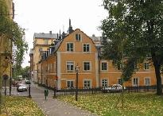

|
|
|

2001

2001
|
Rutenbeckska husets byggherrar, byggmästare, murmästare, snickarmästare,
timmermän, glasmästare, plåtslagare, hantlangare, lärlingar och hela staben av medarbetare vid kvarterets uppbyggnad, kan glädja sig i sin himmel över att
deras verk upphöjts till status av byggnadsminne. Vi sena tiders barn bugar
och
tackar!
Inne på den ljusa gården är det i dag gott om svängrum för fordon även om det inte ens finns en cykel att se. Annat var det på 1870-talet. På Neuhaus' bildkarta täcks halva gårdsytan av en avskiljande flygel till södra längan. Stall, vagnslider och höskulle var utrymmeskrävande delar av den gamla hantverkarstadens kvarter. Betydande husvolymer kunde tas till vara för andra ändamål, när bilismen övertog transporterna.
|
|
|
Atmosfären kring Rutenbeckska huset andas 1700-tal. Kvarterets äldsta del, det panelade trähuset med adress Nytorgsgatan 8, uppfördes omedelbart efter den förödande Katarinabranden år 1723.
Östra delen av längan mot Mäster Mikaels Gata skall enligt stadsmuseets undersökningar ha kommit till före 1754. Den inrymde mellan 1759 och 1770 ett tobaksspinneri. Följande år hade fastigheten bytt ägare. Det var klädesfabrikören J P Rutenbeck som tagit över. Han anpassade lokalerna för hantverksmässig klädestillverkning.
Detta näringsfång bredde alltefter ut sig över hela gårdskomplexet. Från Gustav III:s första regeringsår och fem år famåt lät Rutenbeck bygga ut såväl gårdshuset i sydost, som den vinkelbyggda delen mot sydväst. Den utnyttjades till uthus. Tillbyggnad utefter Mäster Mikaels Gata växte upp under samma tid.
|
|
|

Fjällgatan 2, år 1910 Mäster Mikaels gata 2.

År 1851 lät dåvarande fastighetsägaren Isac Löfgren bygga om hela fastigheten, som fram till 1840 hyst textilhantering inom sina väggar. Han lät inreda bostäder i lokaliteterna. Ett undantag gjordes för en butik som inrättades i östra delen av längan mot Mäster Mikaels Gata.
År 1972 restaurerades fastigheten, och innanför skalet på det trivsamma kvarteret
har
konstnärer fått en fristad för måleri, grafik, skulptur, textilkonst och annat. Vem
som helst släpps inte innanför porten. Chifferkod eller nyckel är enda sättet att ta
sig in. Stockholms invånare gömmer sig inom sina privata revir allt mer och mer.
Yttervärlden känns allt mer otrygg.
|
|

{kind=link}
{kind=link}